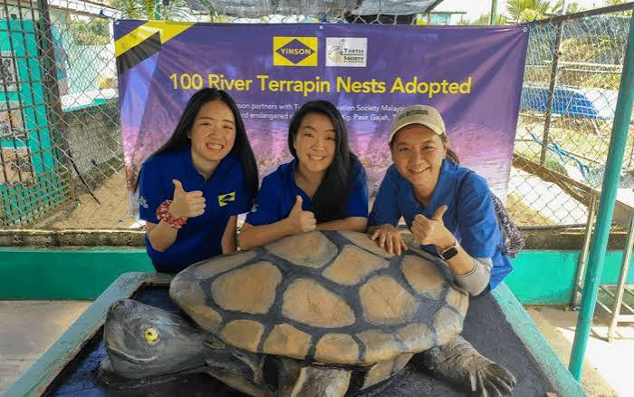
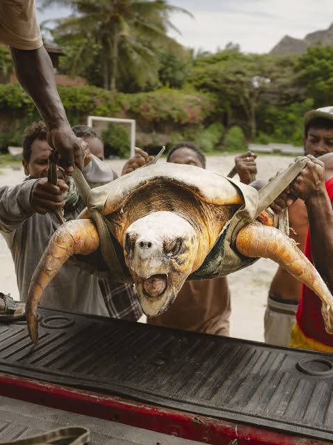
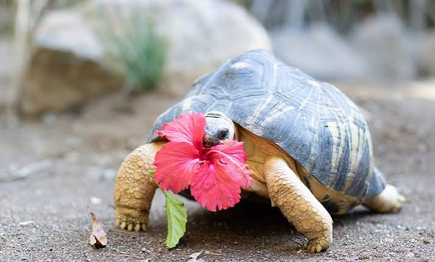
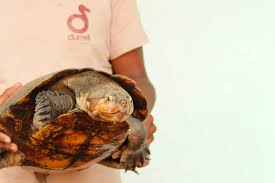
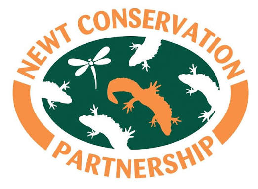

Conservation of Ghana's threatened frogs
CSIR-FORIG discovers two potential new species for formal scientific description
Read More →People living peacefully and prosperously with wildlife in Ghana's thriving ecosystems
Collaborate with communities to protect amphibians and reptiles in Ghana
Conserve priority yet overlooked amphibian and reptile species in Ghana
Our impact goes beyond numbers—we're transforming how conservation is done by putting communities at the heart of biodiversity protection.
 Impact Highlight
Impact Highlight
Despite being flagged as possibly extinct, small populations were rediscovered in eastern Ghana and western Togo. Since 2012, Herp-Ghana has worked with local communities to study and conserve the species.
CSIR-FORIG discovers two potential new species for formal scientific description
Read More →
A frog believed to be extinct for over 40 years was reidentified in 2005 in the Togo-Volta highlands
Read More →
The Volta Region's first canopy walkway has been opened at the Ote waterfall in the valleys of Amedzofe
Read More →
Herp Conservation Ghana has received international recognition for their efforts at protecting the critically endangered Togo slippery frog
Read More →
Herp Conservation Ghana was privileged to be part of the new restoration champions of Africa for TerraFund AFR100
Read More →
Herp Ghana's community centred approach to conservation is featured on Maliasili's Voices of Impact series
Read More →We collaborate with a broad network of local and international partners to amplify our impact

